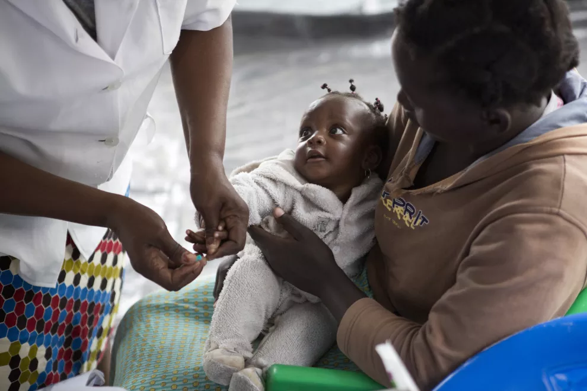

Intorduction
UNICEF, the United Nations International Children's Emergency Fund, has been a cornerstone in the realm of global health for decades. Established in 1946 to provide emergency food and healthcare to children in countries that had been devastated by World War II, UNICEF has since evolved into a global powerhouse in promoting the health and well-being of children worldwide. Its impact on global health is profound and multifaceted, reaching far beyond emergency response to encompass long-term initiatives that address the root causes of health disparities. This blog delves into the various ways UNICEF has influenced and shaped global health outcomes, highlighting its key programs, partnerships, and successes.
UNICEF's Role in Immunization and Disease Prevention
One of UNICEF's most significant contributions to global health has been its efforts in immunization and disease prevention. Through partnerships with governments, NGOs, and other stakeholders, UNICEF has played a pivotal role in expanding access to vaccines in some of the world's most vulnerable communities. The organization's work in eradicating diseases like polio and measles has saved countless lives and prevented untold suffering. By advocating for universal immunization coverage and supporting vaccination campaigns in remote and underserved areas, UNICEF has helped reduce child mortality rates and improve overall health outcomes in many countries.
UNICEF's immunization programs are a critical component of its public health strategy. By working with governments and local health authorities, UNICEF helps ensure that vaccines reach every child, regardless of their socio-economic status or geographic location. The organization's focus on equity and access has been instrumental in closing immunization gaps and reaching marginalized populations who might otherwise be left behind. Through its partnerships with organizations like the World Health Organization (WHO) and Gavi, the Vaccine Alliance, UNICEF leverages resources and expertise to strengthen immunization systems and promote vaccine uptake.
In addition to routine immunization programs, UNICEF plays a key role in responding to disease outbreaks and emergencies. The organization's rapid response teams are deployed to contain outbreaks, provide vaccines, and support healthcare systems in times of crisis. During the COVID-19 pandemic, UNICEF worked tirelessly to ensure that essential health services, including immunization, continued despite the challenges posed by the pandemic. By adapting its strategies and leveraging innovative approaches, UNICEF remains at the forefront of efforts to protect children and communities from vaccine-preventable diseases.
Maternal and Child Health Programs
UNICEF's commitment to maternal and child health is unwavering. The organization recognizes that the health of mothers and children is interconnected and essential for sustainable development. Through its maternal and child health programs, UNICEF aims to reduce maternal and child mortality, improve access to quality healthcare services, and promote healthy behaviors that benefit families and communities. By focusing on the continuum of care from pregnancy to early childhood, UNICEF addresses the complex health needs of mothers and children, ensuring that they receive the support and services they need to thrive.
Maternal health is a key priority for UNICEF, as healthy mothers are more likely to have healthy children. The organization supports initiatives that promote prenatal care, skilled birth attendance, and postnatal support to ensure safe pregnancies and deliveries. By advocating for policies that prioritize maternal health and investing in healthcare infrastructure, UNICEF helps reduce maternal mortality rates and improve maternal health outcomes. Through partnerships with governments, healthcare providers, and community organizations, UNICEF strengthens health systems and builds capacity to deliver essential maternal health services.
Child health is another focus area for UNICEF, as children are particularly vulnerable to preventable diseases and health risks. The organization works to ensure that children have access to essential healthcare services, including immunization, nutrition, and early childhood development support. By promoting exclusive breastfeeding, micronutrient supplementation, and growth monitoring, UNICEF helps prevent malnutrition and promote healthy growth and development in children. Through its community-based programs and outreach efforts, UNICEF reaches families in remote and underserved areas, providing them with the knowledge and resources they need to raise healthy children.
Water, Sanitation, and Hygiene Initiatives
Access to clean water, sanitation, and hygiene is a fundamental human right and a cornerstone of public health. UNICEF's water, sanitation, and hygiene (WASH) initiatives aim to ensure that every person has access to safe drinking water, sanitation facilities, and hygiene education. By working with communities to build sustainable water and sanitation infrastructure, promoting handwashing practices, and raising awareness about the importance of hygiene, UNICEF helps prevent waterborne diseases and improve overall health outcomes. These efforts not only save lives but also contribute to the dignity and well-being of individuals and communities.

Water is essential for life, yet millions of people around the world lack access to clean water sources. UNICEF works to improve water quality and availability by supporting water supply projects, water treatment facilities, and water conservation initiatives. By partnering with governments, local organizations, and communities, UNICEF helps ensure that water resources are managed sustainably and equitably. The organization's focus on water security and resilience is critical in addressing the challenges posed by climate change, population growth, and urbanization, which can strain water supplies and exacerbate water-related health risks.
Sanitation is another key area of focus for UNICEF, as inadequate sanitation facilities can lead to the spread of diseases and environmental contamination. The organization supports sanitation projects that aim to provide safe and hygienic toilet facilities, promote proper waste disposal practices, and prevent open defecation. By working with communities to improve sanitation infrastructure and behavior, UNICEF helps reduce the burden of waterborne diseases and improve overall health outcomes. The organization's emphasis on community engagement and behavior change is essential in ensuring the sustainability and impact of sanitation interventions.
Hygiene promotion is a critical component of UNICEF's WASH initiatives, as proper hygiene practices can prevent the spread of infectious diseases and improve overall health and well-being. UNICEF works with schools, health facilities, and communities to promote handwashing, safe food handling, and menstrual hygiene management. By raising awareness about the importance of hygiene and providing access to hygiene products and facilities, UNICEF helps empower individuals to protect themselves and their families from preventable illnesses. The organization's focus on behavior change communication and community participation is key to ensuring that hygiene practices are adopted and sustained over time.